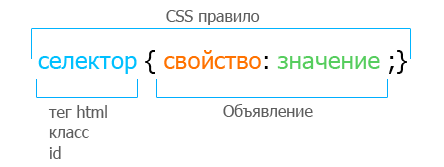

CSS и стили
CSS используется для определения стилей (правил) оформления документов — включая дизайн, вёрстку и вариации макета для различных устройств и размеров экрана. У такого способа форматирования несколько достоинств:
- теги не дублируются;
- документ проще обслуживать;
- внешний вид всего сайта можно изменить централизованно, а не корректировать форматирование каждой странички.
Стили можно разметить внутри тега 'HEAD' или использовать отдельный CSS-файл.
Вот так можно прописать CSS в качестве атрибута непосредственно в HTML:
А так CSS прописывается при помощи тега 'style' и в теге 'head' документа HTML.

Теперь разберёмся, что такое CSS-файл. Всё просто — это файл с расширением .css, где прописываются правила оформления документа. Чтобы привязать файл к оформлению страницы, нужно использовать тег 'link':
Современный способ оформления веб-документов вошёл в практику в 2011 году. Это свойство CSS grid — теперь оно поддерживается практически всеми браузерами. И если раньше приходилось верстать документы с использованием элементов вроде div class="container", то сейчас всё это выполняется средствами CSS.
После того как этот способ стал стандартом, проблема разделения содержания (HTML) и оформления (CSS) решилась раз и навсегда.
Синтаксис CSS
У языка CSS относительно простой синтаксис. Сначала прописывается селектор — он выбирает конкретный элемент на странице. Потом, после фигурных скобок, указываются свойства со значениями — между ними ставится двоеточие. Сами свойства отделяются друг от друга точкой с запятой.

Приоритеты в CSS
Обговорим подробнее вопрос приоритетов. Их иерархия работает следующим образом:
- Самый высокий приоритет у свойств, в конце объявления которых указано !important.
- Затем идут инлайновые стили, которые прописываются в теге через атрибут style.
- Ещё ниже приоритет стилей, заданных в теге style в самом документе.
- Далее следуют стили, подключённые к документу как внешний CSS-файл с использованием тега link.
Методологии CSS
Начинающему веб-мастеру для работы с CSS достаточно просто знать, что такое стили и как их использовать, изучить основные свойства и способы их задавать. А вот при работе с большими проектами уже необходимо использовать специализированные инструменты, а также чёткие стандарты написания CSS. Иначе другие разработчики просто не смогут нормально обслуживать код.
Единой методологии CSS нет. Существует несколько вариантов, и задача разработчика — выбрать ту методологию, которая оптимально ему подходит. Но сначала стоит разобраться с основами, научиться работать с CSS. Кстати, новые варианты появляются не так уж редко, так что за новинками стоит следить.
Наиболее популярные современные методологии CSS — это Atomic CSS (Functional CSS) и CSS в JavaScript. В основе первого варианта лежит использование максимального количества базовых классов, чтобы как можно чаще применять их повторно. Сторонники второго варианта считают, что стили CSS стоит определять не в отдельной таблице, а внутри каждого компонента.